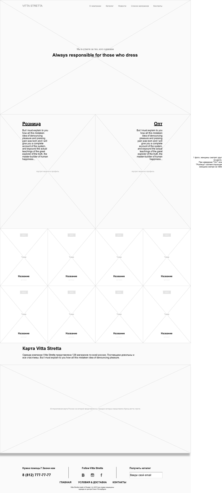
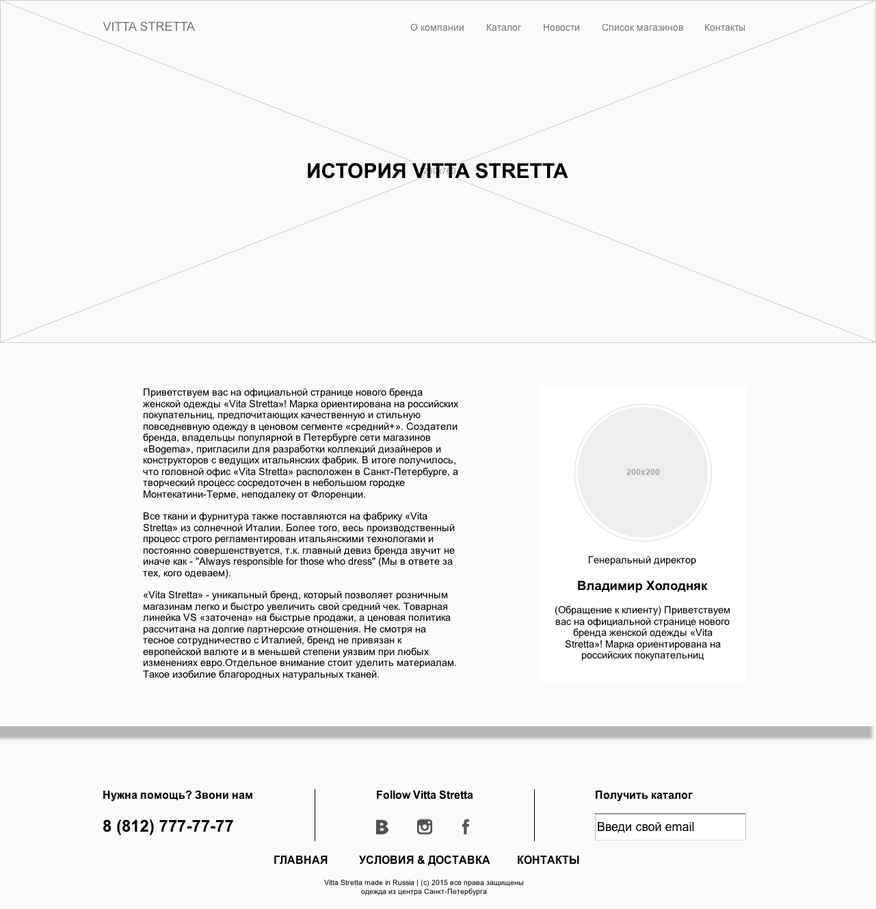
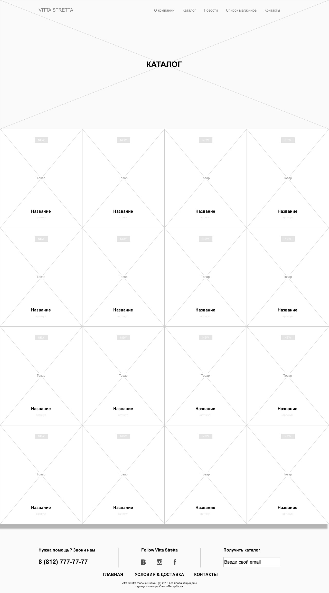
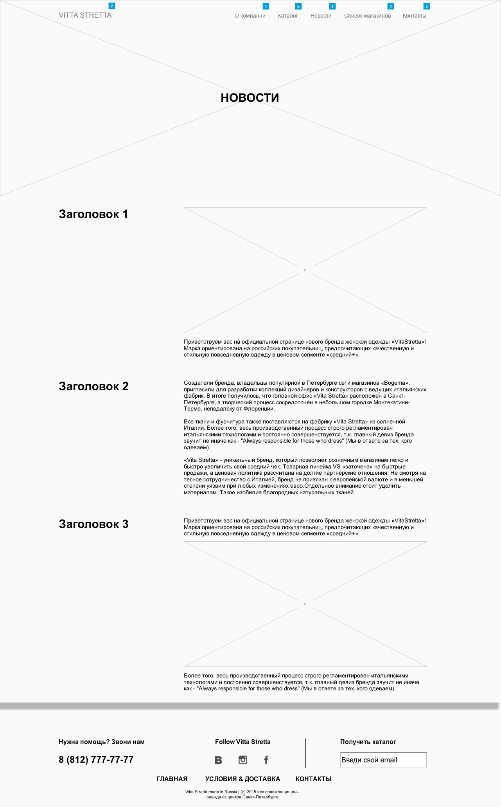
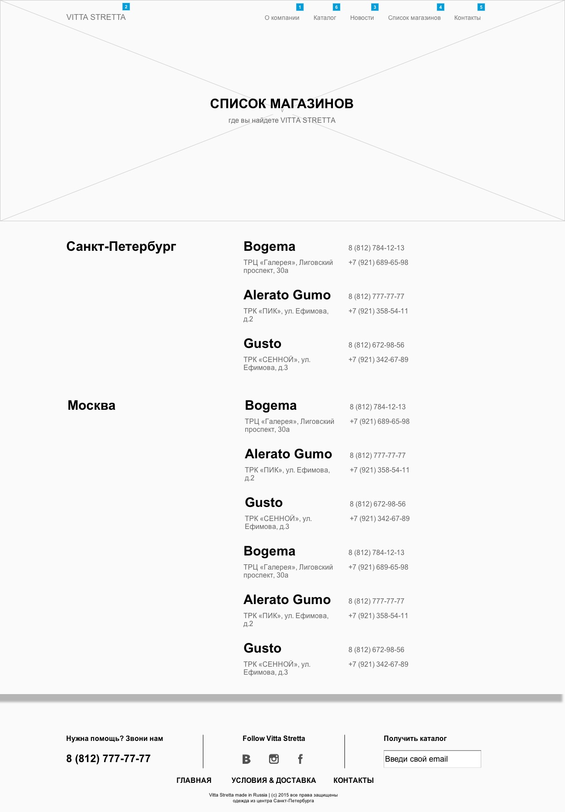
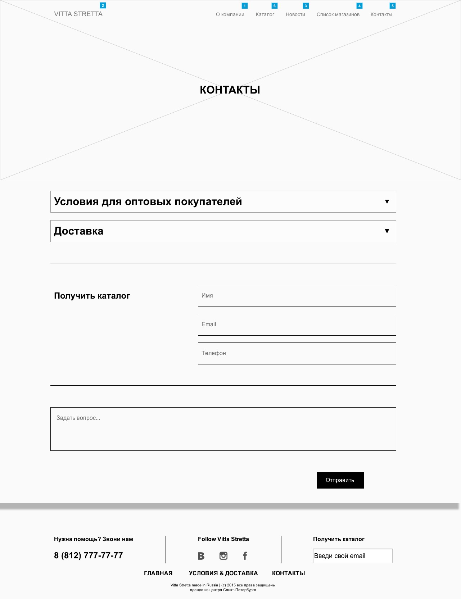
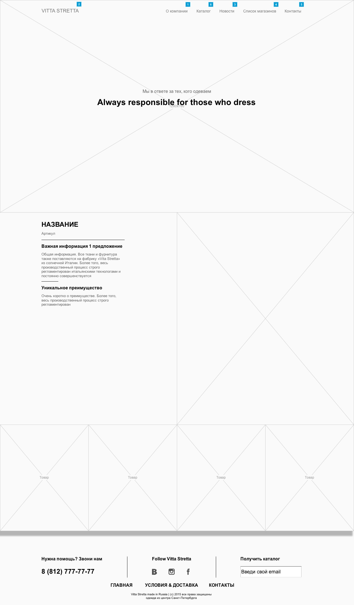

Проект The Vine
Прототипы шаблонных страниц сайта для
«Vita Stretta»
Дизайн
Прототипы
Главная
- Розница & Опт. Заголовки будут являться ссылка. При нажатии на "Розница" пользователь попадает на страницу со списком магазинов. Это решения было принято исходят из того, что пользователю не заинтересованному в приобретении оптом вероятнее всего необходимо узнать где конкретно он может приобрести одежду бренда Vita Stretta.
- Горячее предложение. На главной странице будет распологать 8 горячих предложений или одежда из новых коллекций. Пользователь не переходя по ссылка сможет сразу ознакомиться с одеждой бренда Vita Stretta.
- Стилизованная карта. Интерактивная карта России (СПб), конторой будет точками указанны города, где распологаются магазин с одеждой бренда Vita Stretta.

О компании
На странице "О компании" пользователь сможет ознакомиться с историей создания бренда, где базируется производство, головной офис и другая информация. Основной фишкой данной страницы будет являтся анимированное изображение генерального директора копании с его обращение к пользователю. 
Каталог
Данная страница разрабатывалась с учетом современных трендов и результатов тестирования в области юзабилити ведущих европейских диджитал агенств. Переходя на эту страницу пользователь сразу получет всю необходимую первичную информацию о товаре, а именно большую фотографию, название и артикул. Также пользователю будет доступен фильт по которым он сможет сортировать товары по категория (категории будут согласованны с заказчиком). 
Новости
Блок новостей представляет из себя ленту с возможностю размещения информации как с фотографиями, там сплошным текстом. Было принято решение не выделять под каждую новость отдельную страницу, что обусловленно правилами seo продвижения. 
Магазины
Список магазинов разделен по блокам с названиями городов и основной информацией магазинов, где представлена одежда бренда Vita Stretta. 
Контакты
В раздел с контактами вынесенно 3 основных информационных блока, 2 из которых будут отвечать на основные вопросы оптовых покупателей. Если польователь не найдет ответ а свой вотрос, он сможет задать его или сделать запрос на отправку каталога. Это сделанно для того, что заказчим мог собирать свою базу телефонов и емейлов для дальнейшего использования. 
Карточка товара
Блок карточки товара представляет собой разделенной страницу на 2 части. В Правой части пользователь может подробно рассмотреть товар, а в левой ознакомиться с подробной информацией об этом товаре. Ниже будут размещены фотографии с деталями товара. 
The Vine Creative agency
Наб. реки Мойки, 60В
Санкт-Петербург, 190000
Россия
25 октября 2015